Ceramic Stain
Ceramic stains are manufactured powders. They are used as an alternative to employing metal oxide powders and have many advantages.
Key phrases linking here: ceramic stain, stains - Learn more
Details
Stains are man-made colorant powders used in glazes, bodies and engobes. They are manufactured by sintering powdered components in special furnaces at high temperatures. The powdered mixtures are theoretically stoichiometric, carefully compounded, finely ground and vigorously blended so that adjacent particles react without needing to be melted. After firing they are ground in such a way as to control the particle size within a specific range (often unique to each type of stain). Some stains are also acid-washed after grinding. These processes render them more resistant to dissolving in glaze melts, or melting themselves, compared to the metal oxides from which they are made. Stains vary in quality. For example, if they are not washed well, or not mixed or fired correctly, they will be somewhat soluble in use. Different types of stains have differing levels of stability against temperature. For many colors there are a variety of stain chemistries that can produce them, each has advantages and disadvantages. Prices vary according to the difficulty of manufacture and the ingredient costs. Some colors can only be made using one specific chemistry and/or process.

Only 5% stain is needed for these glossy and matte blacks (vs 15% raw metal oxide or carbonates).
Another difference between theoretical and actual performance happens when stains are used in underglazes. Since stains are prefired they should not off-gas during firing - thus clear overglazes should have superior transparency (because of fewer micro-bubbles). But the opposite can be the case, certain stains used in brushing underglazes can fuel clouding in the transparent cover glaze.
It is important to realize that stains are not to be employed pure as an under- or overglaze. They are to be used in-glaze, as a percentage. This can be as little as 1 or 2% in some applications, but more commonly, much higher. Another issue with using them pure is that most are relatively refractory, which means one cannot expect an overglaze to bond to a pure stain layer (it is like painting a dirty surface). The stains have to be mixed with a melt medium that envelops the particles and bonds with the body below and glaze above. Of course, the medium must not melt too much or colors will bleed into the over or under-lying glaze. Stain mediums also need a hardener and moisture retention additive so they dry slowly enough to paint and with enough durability to be able to handle the ware. If the consistency is a liquid (rather than paste) it also needs a suspender so stain particles, which are heavy, do not settle out in the slurry. As already noted, stains need a medium that will not be hostile to their specific color development (thus, you cannot use a one-medium-fits-all-stains approach). Also, some stains melt more and some less, so the medium needs to take this into account. A melt flow test should be done to fine-tune the flow of each (see link below).
The color of the raw stain powder is the color it makes in a glaze. That means that blending stain powders to create your own colors is entirely feasible. This is especially so with encapsulated stains. But also with others that do depend too much on the chemistry of the host glaze.
There is no set rule for the percentage of stain to use in a glaze. Color intensity can depend greatly on chemistry factors. Light colors require higher percentages (perhaps up to 20% or more). 1% or less of a cobalt blue stain might be all that is needed. Good blacks might be achievable with 5-10%. There is a picture of a sample tile below with a variety of stains, the percentage for each is shown. Encapsulated stains, which are the most expensive, require the highest percentages, producing glazes that are likely dramatically more expensive than any other you may have ever used.
Stain manufacturers document which of their products are body and glaze stains. Don't ignore this. Body stains only work well in porcelains, the whiter firing the better (any iron in a body will degrade most stain colors.) That being said, dark colors (e.g. black, brown) can work better in an iron-bearing body. In a transparent glaze there is depth, so stain particles are visible from the surface down into the matrix, intensifying the color. In bodies and engobes this is not the case, the only color is coming from stain particles at the surface. Their particle size and chemistry and firing temperature are tuned to use in a porcelain. The power of some body stains to produce intense color, even at low percentages (e.g. 5%) is amazing. It is also interesting that while some glaze stains produce no body colour at all others not recommend for bodies produce good color. Some body stains, like manganese alumina pinks, will completely matte a glaze in even low percentages.
Stain product brand names can be confusing. This happens when one company buys another and continues to support the product names and numbers of the former company. As an example, the German Degussa company spun off its ceramic color business as Cerdec in 1993. They later bought Drakenfeld Colors (of Washington, PA). In 2001 Ferro USA bought Cerdec. So that means that any stain labelled as any of these three companies is actually a Ferro product now.
Stain manufacture is fraught with toxins, producers must be conscientious to protect workers. Sad to say, this is not always done in many parts of the world. Keep this in mind when purchasing. Ethically sourcing materials will not be easy, it means paying more for already-expensive products.
The food safety of stained surfaces is a complex subject. Generally, the safest way to produce safe food surfaces with stains is to include them as a percentage in a balanced glossy base glaze. Use the minimum amount needed to produce the desired color. Stains are only sintered, they are not melted like frits. Stained bodies and underglazes are best not used as food surfaces, especially where significant percentages are required to produce the needed color intensity. In addition, if stains that are not acid-washed are added to a body they will dissolve to some extent (upon slurrying or plugging). That means the solubles will migrate out of the body during drying, like other soluble salts, and be left on the surface causing unsightly discoloration and textures.
Related Information
Mason stains in the G2934 matte base glaze at cone 6

This picture has its own page with more detail, click here to see it.
Stains can work surprisingly well in matte base glazes like the DIY G2934 recipe. The glass is less transparent and so varying thicknesses do not produce as much variation in tint as glossy bases do. Notice how low many of the stain percentages are here, yet most of the colors are bright. We tested 6600, 6350, 6300, 6021 and 6404 overnight in lemon juice, they all passed leach-free. The 6385 is an error, it should be purple (that being said, do not use it, it is ugly in this base). And chrome-tin pink and maroon stains do not develop the color (e.g. 6006). But our G1214Z1 CaO-matte comes to the rescue, it both works better with some stains and has a more crystal matte surface. The degree-of-matteness of both can be tuned by cooling speed and blending in some G2926B glossy base. You can mix any of these into a brushing glaze or a dipping glaze. Be sure to blender mix them to break up any agglomerates.
Mason stains in G2916F cone 6 clear base
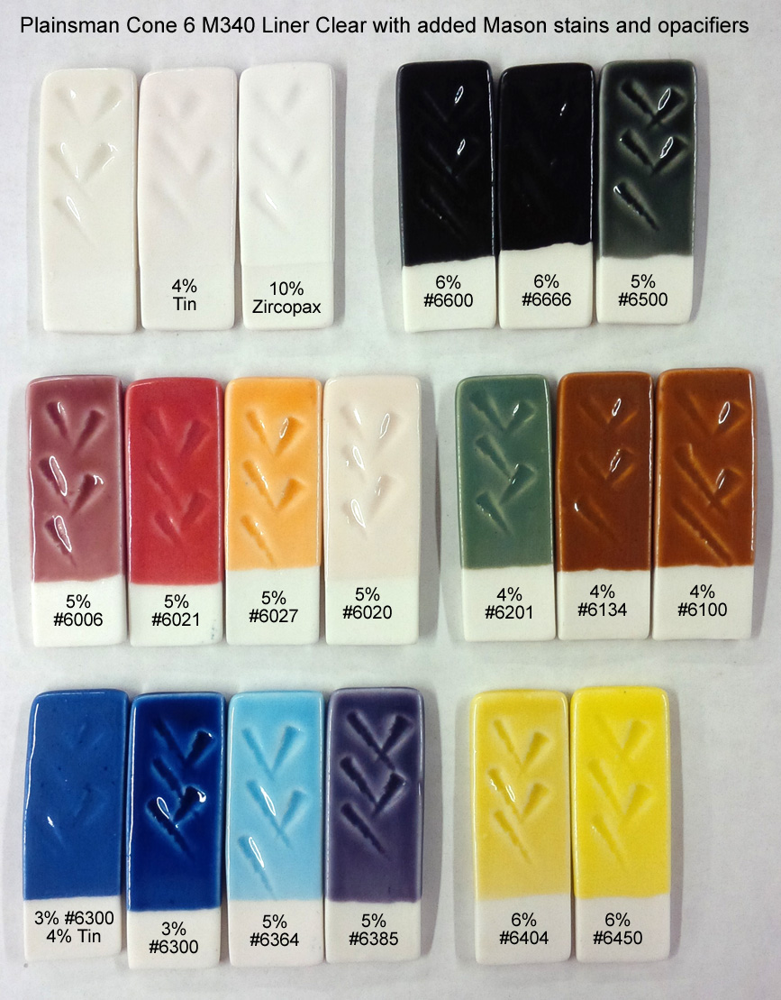
This picture has its own page with more detail, click here to see it.
These are Mason stains added to cone 6 G2916F clear liner base glaze. Notice that all of these stains develop the correct colors with this base (except for manganese alumina pink 6020). However caution is required with inclusion stains (like #6021), if they are rated to cone 8 they may already begin bubbling at cone 6 is some host glazes.
Mason stains in the G2926B base glaze at cone 6
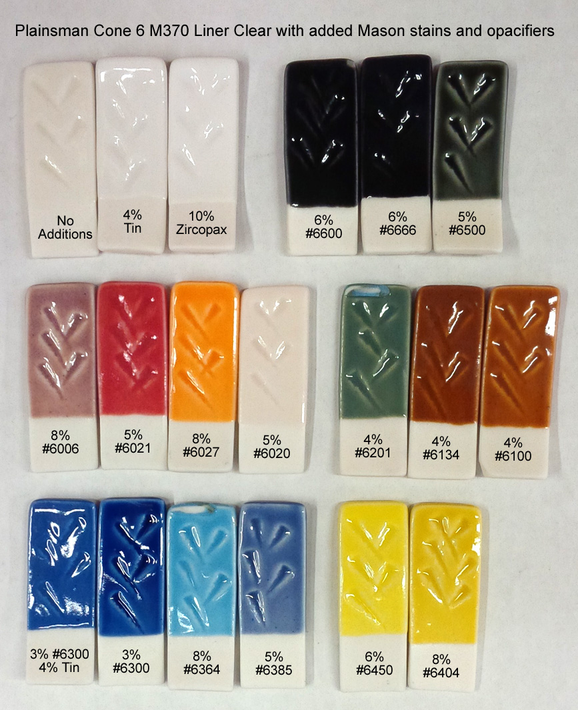
This picture has its own page with more detail, click here to see it.
This glaze, G2926B, is our main glossy base recipe. Stains are a much better choice for coloring it than raw metal oxides. Other than the great colors they produce here, there are a number of things worth noticing.
-Stains are potent; the percentages needed are normally much less than for metal oxides.
-Staining a transparent glaze produces a transparent color, it is more intense where the laydown is thicker - this is often desirable in highlighting contours and designs. For pastel shades, add an opacifier (e.g. 5-10% Zircopax, more stain might be needed to maintain the color intensity).
-The chrome-tin maroon 6006 does not develop well in this base (alternatives are G2916F or G1214M).
-The 6020 manganese alumina pink is also not developing here (it is a body stain).
-Caution is required with inclusion stains (like #6021). Bubbling, as is happening here, is common - this can be mitigated by adding 1-2% Zircopax.
-And it’s easy to turn any of these into brushing glazes or dipping glazes. Be sure to blender mix them to break up any agglomerates.
When using stains, customize the percentage, host glaze and firing schedule
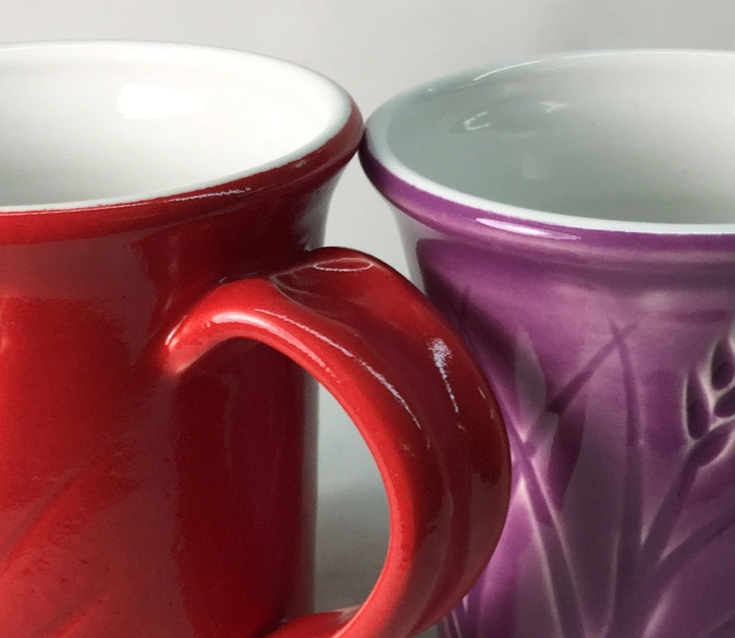
This picture has its own page with more detail, click here to see it.
These are G2926B clear glazes with stains added and fired at cone 6. The one on the left has 11% Mason 6021 encapsulated red. It is pebbling the surface (even with 2% zircon), it may be at the upper end of its firing range. Possible solutions are faster firing up and down to give the stain less chance to decompose. Or firing at cone 5 instead. Or a drop-and-hold firing schedule. Or a lower percentage, that could impart a bit of variation where it is thicker and thinner (like the purple one). A different host glaze, perhaps one with less boron. The purple one has 10% Mason 6304, it is not affecting the glossy glaze surface. But the percentage needs to be higher to prevent the wash-out of color where it is applied thinner.
Stains that work better in some glazes and not others

This picture has its own page with more detail, click here to see it.
This demonstrates how the host glaze affects the color development of certain stains. Blue is stable in pretty well all glazes. But chrome tin pink (top row) is very particular that the glaze have the right chemistry (1214M is obviously best, it has the highest CaO and lowest B2O3). The 6100 brown works much better in the N and O base glazes (they have higher Al2O3). Stain companies have guidance on chemistry particulars and you can view the chemistry of your recipe in your account at insight-live.com.
Why pure stain powders make poor inks, slips, underglazes and overglazes

This picture has its own page with more detail, click here to see it.
On the left are pure blue stain brush strokes, on the right are green ones (both painted over a glaze). Clearly, the green is refractory, stiffening the glaze enough to trap bubbles and sit on the surface as a dry, unmelted layer. The blue is the opposite, melting and bleeding profusely into the glaze. Under the glaze, these problems would be magnified (the blue bleeding more, the green causing crawling and blistering). Stains are not ceramic, they are ceramic additives. Stains are not safe for direct food contact. Stains are expensive. Stains don't suspend in water, paint poorly and dry as a lose powder. These stains each need to be added, as a minor percentage, to a ceramic painting medium (one with CMC gum and a mix of ceramic materials tailored to melt to the desired degree and have a compatible chemistry for develop the color (as per manufacturer guidelines).
Why would I use a heavily pigmented black glaze on a food surface?
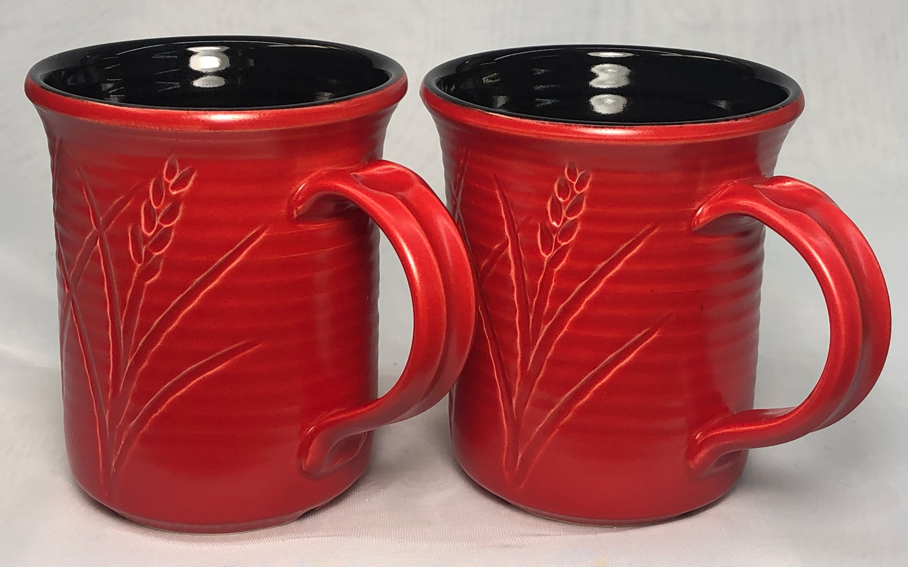
This picture has its own page with more detail, click here to see it.
These are actually two different cone 6 base glazes to which I add a black stain. I trust them because I know what is in them, I formulated and perfected them myself: G2926B clear and GA6-B Alberta Slip base. They are durable, fit my clay bodies, melt well yet can host a stain without loss of gloss. I even know the chemistry, both have plenty of SiO2 and Al2O3, that is a hallmark of durability. I fired these using the PLC6DS schedule. I add 5% black stain to the former and 4% to the latter, both yield a jet-black. The GA6-B requires ball milling. Stains are inherently much safer to use than raw metal oxide colorants because they are sintered as colorant/stabilizer blends. And much less is needed. Contrast that with raw metal oxides, it is common to find black recipes containing up to 15% of blends of nickel, cobalt, iron and manganese! At times the manganese alone can be 8% or more! So, I feel relatively safe using these coloured glazes on a surface that will be exposed to hot and acidic liquids.
Organized testing of stains in a base recipe
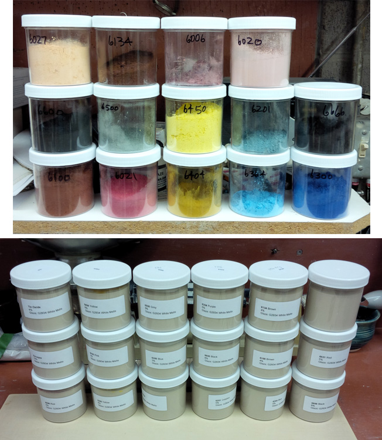
This picture has its own page with more detail, click here to see it.
A quick and organized method of testing many different stains in a base glaze: Prepare your work area like this. Measure the water content of the base glaze as a percent (weight, dry it, weight it again: %=wet-dry/wet*100). Apply labels to the jars (bottom) showing the host glaze name, stain number and percentage added. Counterbalance a jar on the scale, fill it to the desired depth, note the amount of glaze and calculate the weight of dry powder that is present in the jar (from the above %). For each jar (bottom) multiply the percent of stain needed by the dry glaze weight / 100. Then weigh that and add to the jar and put the lid back on. Let them sit for a while, then shake and mix each (I use an Oster kitchen mixer). Then dip the samples, write the needed info on them and fire.
How to include stains in chemistry calculations in Insight

This picture has its own page with more detail, click here to see it.
The simple answer is that you should not. The chemistry of stains is proprietary. Stain particles do not dissolve into the glaze melt like other materials, they suspend in the transparent glass to color it. That is why stains are color stable and dependable. In addition, their percentage in the recipe, not the formula, is the predictor of their effect on the fired glaze. Of course they do impose effects on the thermal expansion, melt fluidity, etc., but these must be rationalized by experience and testing. But you can still enter stains into Insight recipes. Consider adding the stains you use to your private materials database (for costing purposes for example).
Each Mason stain has its own personality for coloring the body

This picture has its own page with more detail, click here to see it.
These Mason stains make the porcelain more refractory, but some more so (e.g. 6385, 6226). Some do not develop the intended color (e.g. 6006 pink, it is a glaze stain only). Some need a higher concentration (e.g. 6121, 6385). Some need a lower concentration (e.g. 6134). Some do not impart a homogeneous color (e.g. 6385). The data sheets from the stain manufacturer normally make it clear which of their stains are suitable in bodies. But it is up to you to test concentrations needed to get the desired color and what adjustments to the porcelain are needed to compensate its degree of vitrification in response to the effects of the stain.
Cone 6 porcelain marbled and thrown
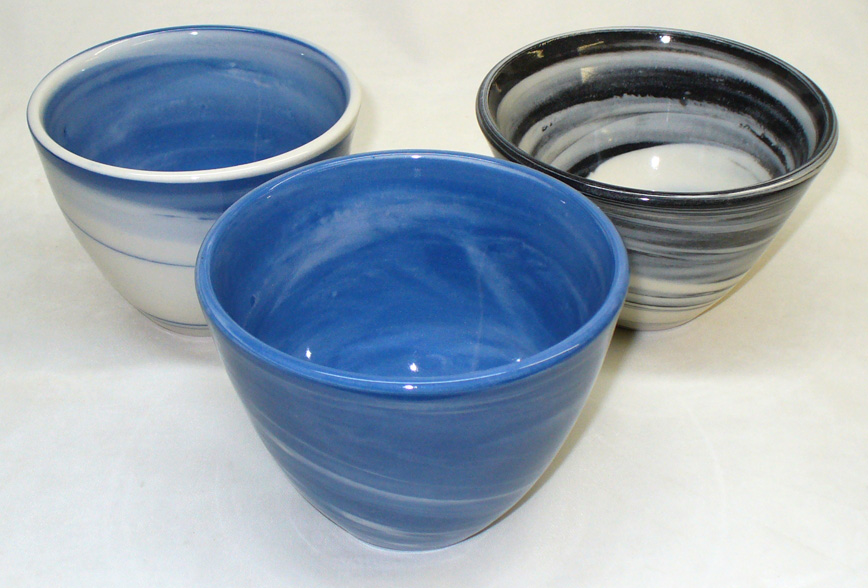
This picture has its own page with more detail, click here to see it.
These bowls were made by Tony Hansen using a mixture of white and stained New-Zealand-kaolin-based porcelain (Plainsman Polar Ice) fired at cone 6. The body is not only white, but very translucent.
A blue burning stoneware body: 3% stain does it
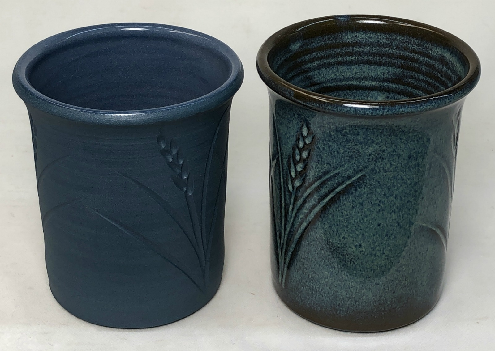
This picture has its own page with more detail, click here to see it.
Left: The outside is unglazed, the inside is a transparent. Mason 6300 stain. On the right is the same body overglazed with Alberta Slip floating blue (GA6-C).
Stained Plainsman Polar Ice Porcelain - With Polishing (no glaze)
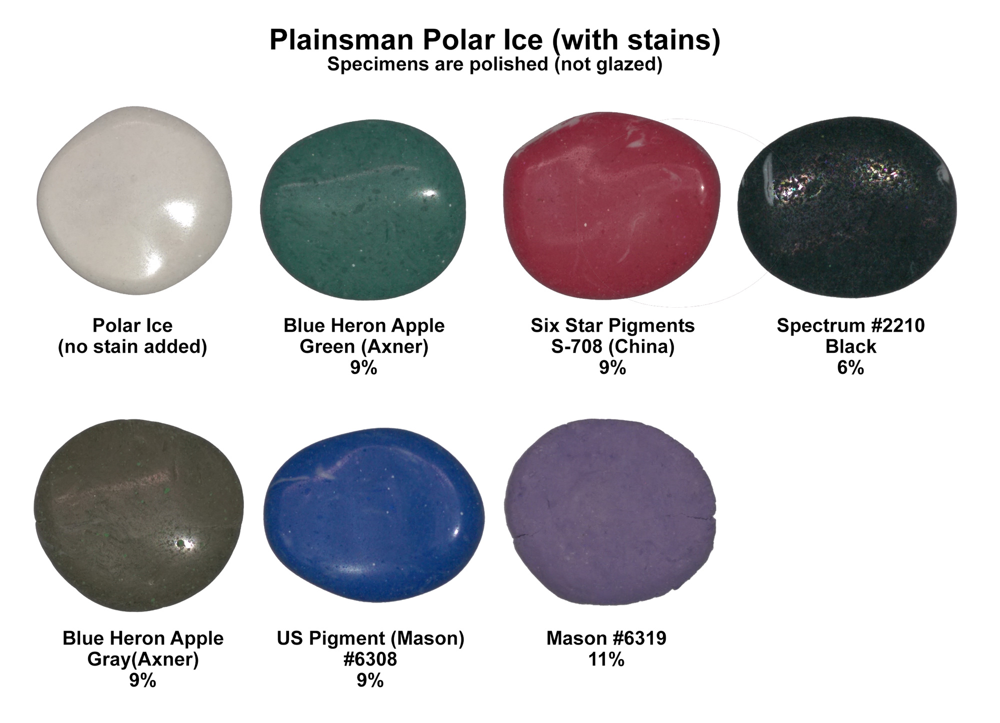
This picture has its own page with more detail, click here to see it.
Fired to cone 6. These are not glazed. Polar Ice is very vitreous and very white, an ideal host for stains. You can make a very similar porcelain yourself using the L3778D recipe (you just need a propeller mixer and plaster table). However, there is a caution: If a stain is refractory, it can reduce the firing shrinkage of the porcelain considerably. On the other hand, some stains will flux bodies and do the opposite. That means if high and low shrinkage stained versions of Polar Ice are laminated or marbled, the firing can create a tension-time-bomb that either exits the kiln cracked or cracks down the road. Of course, a polished surface would not be suitable for food or drink surfaces if the porcelain is being stained by an inclusion pigment containing cadmium or other known hazardous metal. This work is courtesy of Robert Barritz.
Polar Ice Porcelain with Body Stains - by Robert Barritz
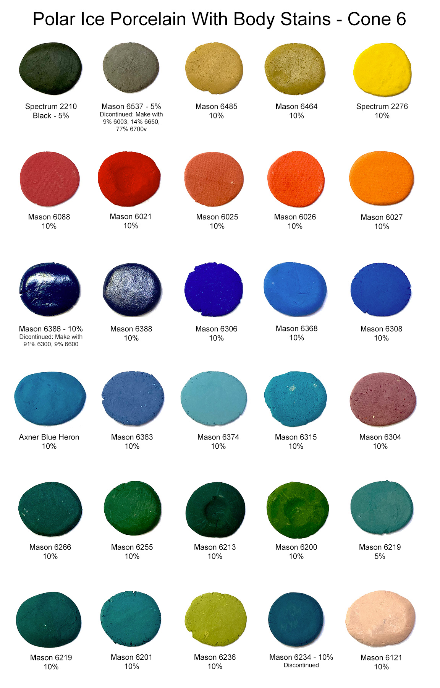
This picture has its own page with more detail, click here to see it.
Robert has done really valuable work in this research, what an amazing range of color! Surfaces are unpolished and unglazed. All are fired to cone 6. Browns are missing, they can be made using iron oxide. For blacks, Mason 6600 is also effective. The blues can be intense using lower percentages than shown here, as low as 2% can be effective. There is an optimal amount for each stain, beyond that, increases in percentage bring little increase in color intensity. There is another reason to keep stain percentages to a minimum: To reduce the impact on body maturity (and firing shrinkage). Blues, for example, can significantly heighten the degree of vitrification, even melting the porcelain. If you plan to marble different colors, keeping stain percentage as low as possible is even more important, unless you can do fired shrinkage compatibility testing, for example, the EBCT test. Need to develop your own white porcelain? See the link below.
Stains in bodies will usually bleed color into glazes used over them, especially if the body is vitreous. This can be leveraged to create or amplify variegation. Strangely, stains can increase micro bubbles in transparent glazes.
Stains are better in black DIY glazes
Use 5% stain instead of 15% metal oxides
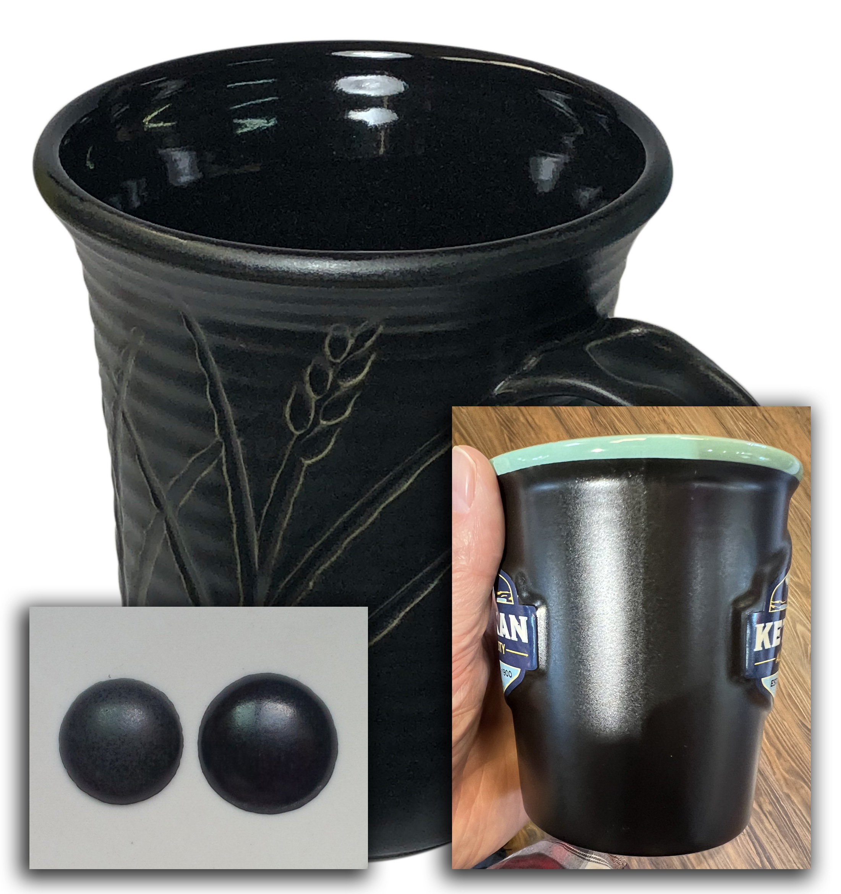
This picture has its own page with more detail, click here to see it.
Consider the hazards and hassles before choosing a black matte or gloss recipe that has high individual or combined percentages of manganese dioxide, cobalt or nickel.
Gloss blacks: These are super popular as the base for layering of reactive glazes. DIY dipping versions thus make a lot of sense. They make even more sense when they don’t turn to jelly in the bucket because of the high percentage of red iron oxide in all blacks made using metal oxide colorants. And when the total percentage of pigment is as high, or higher than 15%. And when the pigments cause crystallization (especially when overloaded).
Matte blacks: The human eye can detect even slight differences in the degree of matteness (which is very difficult to keep consistent). Raw metal oxides affect the matteness, especially when overloaded with pigment. They are prone to cutlery marking if too matte. By using stains, manufacturers and even potters have learned to tune recipes (lower left) and firing schedules to achieve consistency and functionality (even tourist souvenirs (lower right) feature them now). With stains, only one material is producing the color, its percentage (which can be as low as 4%) can be tuned.
What happens when you opacify a colored glaze?

This picture has its own page with more detail, click here to see it.
Left: G2934 cone 6 matte glaze with 3% Mason 6300 blue stain. Right: An additional 4% tin added. The thickness of application is close to the same. Notice how an opacified color does not have depth and therefore is lighter in color. Also it does not break to different shades at the edges of contours the way the transparent color does.
Two stains. 4 colors. Will the guilty oxide please step forward.

This picture has its own page with more detail, click here to see it.
These pairs are G2934 matte and G2916F glossy cone 6 base glaze recipes. The left pair has 5% maroon stain added, the right pair 5% purple stain. Why? The Mason Colorworks reference guide has the same precaution for both stains: the host glaze must be zincless and have 6.7-8.4% CaO (this is a little unclear, it is actually expressing a minimum, the more the CaO the better). The matte recipe calculates to 11% CaO, the glossy to 9%. So there is enough CaO. The problem is MgO (it is the mechanism of the matteness in the left two), it impedes the development of both colors (although not mentioned on the Mason docs).
Two different shipments of a cobalt free black stain. Why different colors?
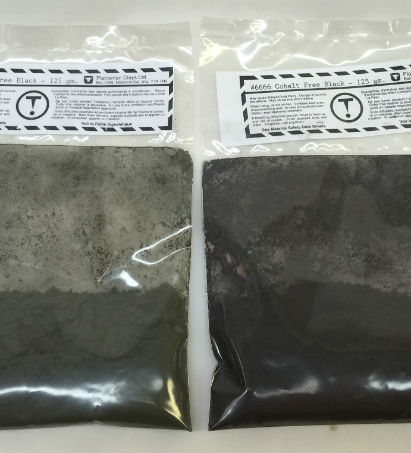
This picture has its own page with more detail, click here to see it.
This is not actually bad, it is good. Stain companies make adjustments when they receive shipment of off-standard raw colorants, this insulates the end user from fired variations in color. In this case, they added extra chrome (to the one on the left), the final product produces the same colored black glaze.
Maroon and white mug before and after firing: What a difference!
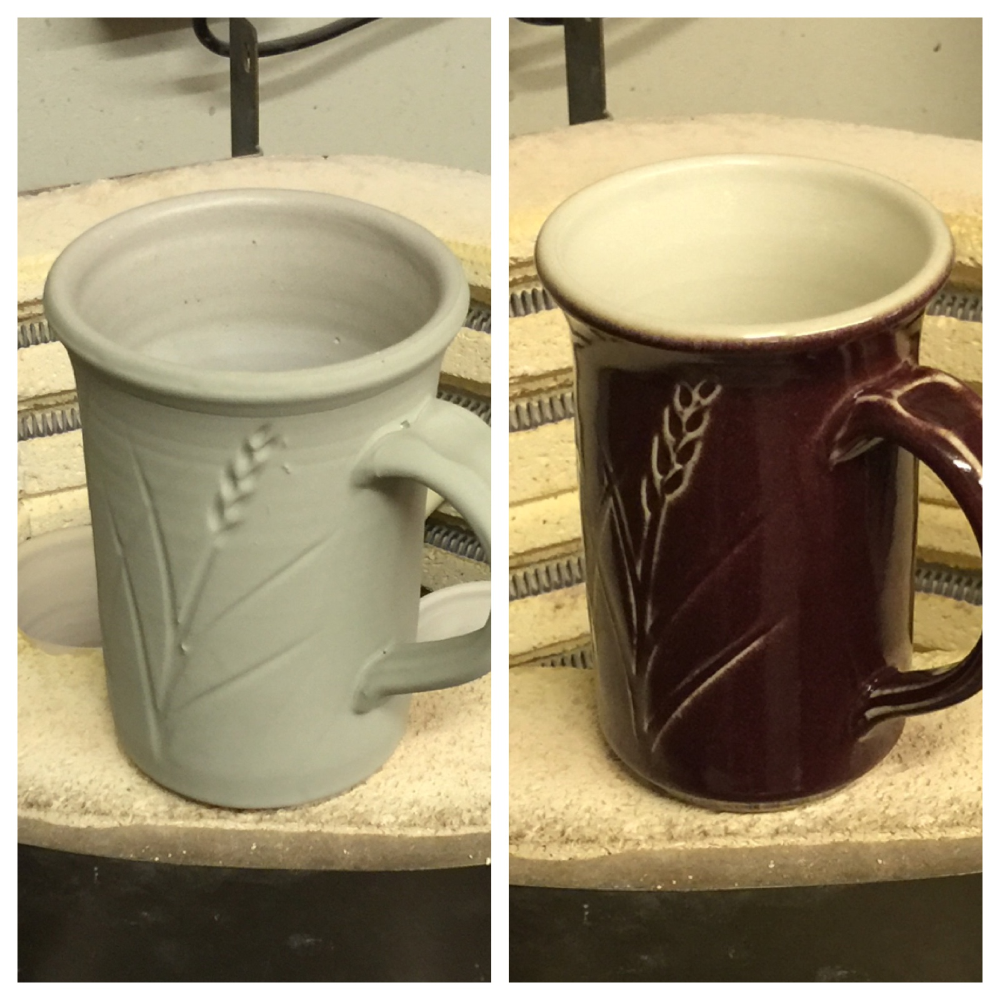
This picture has its own page with more detail, click here to see it.
The outer glaze is Ravenscrag GR6-E Raspberry, the bright maroon color is a product of the surprising interaction between the 0.5% chrome oxide and 7.5% tin oxide present. That small amount of chrome is only enough to give the raw powder a slight greenish hue, hardly different than the clear liner glaze. While this color mechanism appears to be effective, it is delicate. A maroon stain is actually a better choice. It would fire more consistent would be less hazardous to use. And the raw glaze will be the same color as the fired one!
Stains added to a base glaze can change its melt fluidity. Adjust the base.

This picture has its own page with more detail, click here to see it.
At the top is a melt-flow GBMF test ball of a cone 6 satin matte glaze, G2934.
Left bottom: 8% 6213 Mason Hemlock green stain added. The color is good but it is not melting as much and the surface is more matte. A solution is to adjust the base: employ a 90:10 or 80:20 matte:glossy blend to give it better fluidity. Right bottom: 8% 6385 Mason Pansy Purple stain added. The percentage of stain appears to be a little low and its surface is a little too matte. Again, blend a some glossy clear in the the matte base to shine it up a little.
Encapsulated stains are firing with a mass of bubbles and pinholes
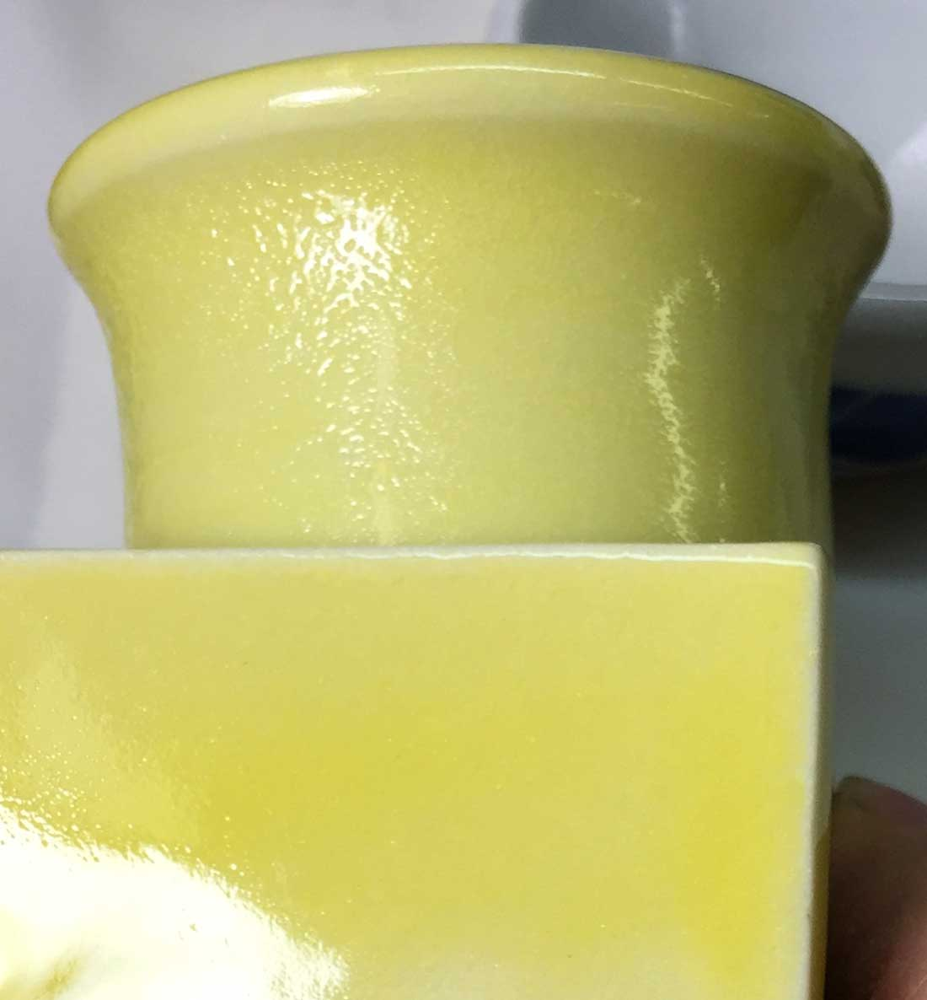
This picture has its own page with more detail, click here to see it.
This is happening on five different stains at 8% concentrations. The body: A fritted porcelain. Temperature: Cone 03. The glaze: 85% frit. The solution? Documentation for inclusion frits notes that adding 2-3% zircon can brighten the color. Although this does not seem intuitive, we added 2% anyway and refired another sample. You can see the dramatic difference on that tile below. The color is brighter because the micro-bubble clouds that were diffusing it are gone! Of course, it is apparent that the percentage of stain also needs to be increased to get more intense color. What happened to the bubbles? It could be that the particles of zircon that float, unmelted in the glaze melt, act as seed-points for bubble agglomeration and the bigger bubbles then break the surface and it heals behind them. But where do the bubbles come from? I do not know.
Blue specks in a pugged porcelain. Be careful when adding stain.
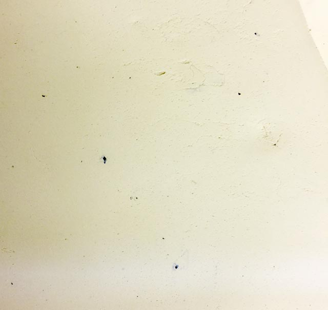
This picture has its own page with more detail, click here to see it.
This is the cut-line on a wet, plastic slug of porcelain. These specks are agglomerates of a blue stain and existed even though the porcelain was dispersed under a powerful slurry mixer for ten minutes. Pure cobalt, if used to stain a porcelain, is known to do this. So stain is often used as an alternative. Some stains disperse much better than others (and do not agglomerate like this). The lesson is to test the colors of the stain available to you to make sure and use one that does disperse well.
White stain. Does it work?

This picture has its own page with more detail, click here to see it.
This is G2934Y matte glaze base with opacifiers added. It has been applied to a dark-burning body to demonstrate the comparative degrees of opacity. The stain is Mason 6700 white. While it does not opacify nearly as well as tin or zircon, it does produce a smoother surface.
Black stain powders vs. manganese dioxide at cone 6
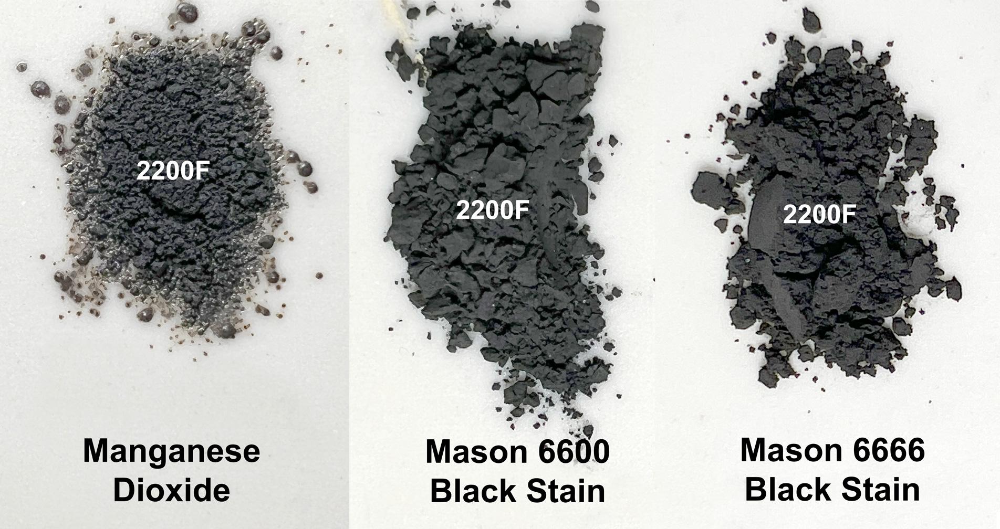
This picture has its own page with more detail, click here to see it.
The stains are still powders, showing their advantage over using raw metal oxides to color glazes. Pretty well all black glazes employ manganese along with other metal oxides, double or triple their combined percentage is needed to stain a glaze black. Much of the reason for this is that they dissolve in the melt.
Zircopax as a fining agent to de-bubble a stained glaze

This picture has its own page with more detail, click here to see it.
The cone 03 porcelain cup on the left has 10% Cerdec encapsulated stain 239416 in the G2931K clear base (this is not an underglaze with a transparent over it). The surface is badly orange-peeled because the glass is full of micro-bubbles that developed during the firing. Notice that the insides of the cups are crystal-clear, no bubbles. So here, they are a direct product of the presence of the stain. The glaze on the right has even more stain, 15%. Why isn't it even worse? It also has a 3% addition of Zircopax (zircon), which acts as a fining agent. As you can see, this makes a dramatic difference. Suppliers of encapsulated stains even recommend a zircon addition, but are often unclear about why. This is the reason.
The yellow on the right could be improved further with a slow-cool or drop-and-hold firing. And if the glaze was reformulated to use a later melting frit (so fewer bubbles even get trapped).
Stain-based black engobe is clean to use!

This picture has its own page with more detail, click here to see it.
Stains are fired, inert particles of a relatively large ultimate size. Unlike that, raw oxide powders, like iron or manganese, have much finer sizes and are thus extremely dirty to use. This plaster slab is being used to dewater these 15% black engobes for shrinkage testing. The slurry on the right has just been poured, the one on the left has just been peeled up (it was spread across almost the entire surface). Notice it has left no stain (the marks on the outer edge wash off easily). What does this mean? It means that using this engobe is much, much cleaner than using a body or slip colored using raw or burnt umber, iron, manganese or cobalt.
Inbound Photo Links
 Stains having varying fluxing effects on a host glaze |
Links
| Articles |
Glaze and Body Pigments and Stains in the Ceramic Tile Industry
A complete discussion of how ceramic pigments and stains are manufactured and used in the tile industry. It includes theory, types, colors, opacification, processing, particles size, testing information. |
| Articles |
A Low Cost Tester of Glaze Melt Fluidity
Use this novel device to compare the melt fluidity of glazes and materials. Simple physical observations of the results provide a better understanding of the fired properties of your glaze (and problems you did not see before). |
| Articles |
An Overview of Ceramic Stains
Understanding the advantages of disadvantages of stains vs. oxide colors is the key to choosing the best approach |
| Projects |
Stains
|
| Glossary |
Jasper Ware
|
| Glossary |
Encapsulated Stain
This is a type of stain manufacture that enables the use of metal oxides (like cadmium) under temperature conditions in which they would normally fail. |
| Glossary |
Sintering
A densification process occurring within a ceramic kiln. With increasing temperatures particles pack tighter and tighter together, bonding more and more into a stronger and stronger matrix. |
| Glossary |
Limit Recipe
"Recipe logic" is the ability to sanity-check ceramic glaze recipes on sight, by noting that materials present and their relative percentages. |
| Glossary |
Stain Medium
It is a mistake to use pure stains for decorating ware. Stains need to be mixed with a ceramic carrier and a working medium to work and fire well. |
| Glossary |
Colorant
In ceramics and pottery, colorants are added to glazes as metal oxides, metal-oxide-containing raw materials or as manufactured stains. |
| Glossary |
Metal Oxides
Metal oxide powders are used in ceramics to produce color. But a life time is not enough to study the complexities of their use and potential in glazes, engobes, bodies and enamels. |
| Materials |
Stain
|
| Hazards |
Are colored porcelains hazardous?
|
 PayPal | No tracking, No ads, No paywall, No transient content! Just organized, concise information constantly updated and improved. Was this helpful? Consider supporting me. |
| By Tony Hansen Follow me on        |  |
Got a Question?
Buy me a coffee and we can talk 

https://digitalfire.com, All Rights Reserved
Privacy Policy